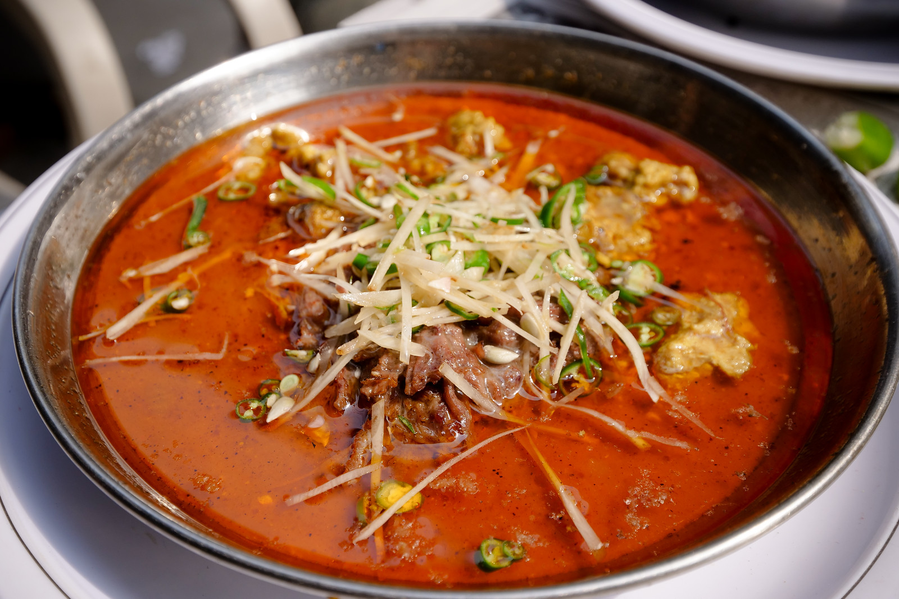

The tradional Food of Pakistan
To start this list off right, I just have to talk about Nihari. This dish is truly a game-changer for me when it comes to Pakistani cuisine. I would easily consider this among the best breakfasts I have ever had anywhere in the world. Nihari begins as a heap of dry spices frying in vegetable oil and animal fat. The meat ingredients follow (most commonly beef shank), and a very healthy portion of Desi Ghee (home-made local clarified butter). The slow-cooking stew is then stirred altogether in a glorious cauldron of a pot. The consistency is oozing and thick, so full of ultra-tender meat chunks literally floating in desi ghee. It has a deep red color from the spice and infused ghee. Eaten from communal plate-trays, you garnish the Nihari from a side-plate of fragrant sliced ginger, spicy green chilies, and a squeeze from a fresh lime or two. In Lahore you can try nihari at Waris Nihari, and in Karachi, I would highly recommend Javed Nihari.
Kabul, the capital of Afghanistan, lies just a few hours from the KP Province (North-Western border) of Pakistan. Imagine Silk Road traders bringing over the very first dishes of Kabuli Pulao to eat right here in Western Pakistan. Pulao can be made with any size grain of rice, which the chef always fries in oil while stirring in large amounts of dry spices. Usually, there will be a chunk of mutton or beef meat, sometimes an entire leg, at the heart of each massive batch. Saffron gives the rice taste and color, but typically the spices are milder than biryani. Whole cloves of cardamom and golden sultana raisins give off a beautifully sweet aroma, and at larger restaurants it may include peanuts and even pistachios as a garnish. You can recognize pulao on the street in its absolutely huge stainless steel cooking vessel, a unique, bell-like shape, often resting at a curious 45-degree angle. Kabuli Pulao smells gorgeous, looks beautiful, and of course tastes incredible as well. A perfect dish for lunch, walking around the lively street atmosphere of any of Pakistan’s large, bustling cities, especially common in and around Peshawar.

Karahi is one of the best of all Pakistani food, and is dear to the hearts of all Pakistanis. You can find Karahis cooking in the smallest roadside shop, or in the Palatial kitchen of a local Rajah. The dish takes its name from the black, iron, scoop-shape pan. Usually a karahi curry is made with goat, but also commonly with chicken or even shrimp. The metal dish can then be its own serving bowl, sizzling hot coming straight to the center of your table. Most Pakistani karahi recipes start with tomatoes, onions, and some type of animal fat. It’s that tomato broth that gives each Karahi its ultra-umami magic, so full of smokiness, tender chunks of meat, and a whole lot of fat – from the meat, the ghee, and the occasional dollop of cream. The tools of choice for cooking this dish are a massive pair of pliers to grip the pan, and a metal spatula to move meat around. Every pan is cooked over flaming high heat, and the chef’s motion follows a steady working rhythm – add oil, meat, count to three, stir. More oil, grip the pan to rapidly add spices, move the entire dish to a serving tray, then breathe (chef wipes a dripping brow). This is an iconic dish of Pakistan, and can be found throughout the country. In Lahore, Butt Karahi is mandatory, and we had an insanely good Shrimp Karahi at the Dua Restaurant in Karachi, lounging outdoors in a seating area the size of a playing field.